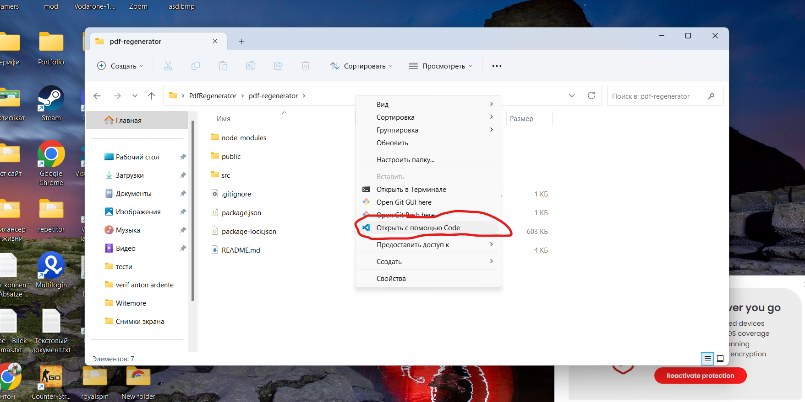
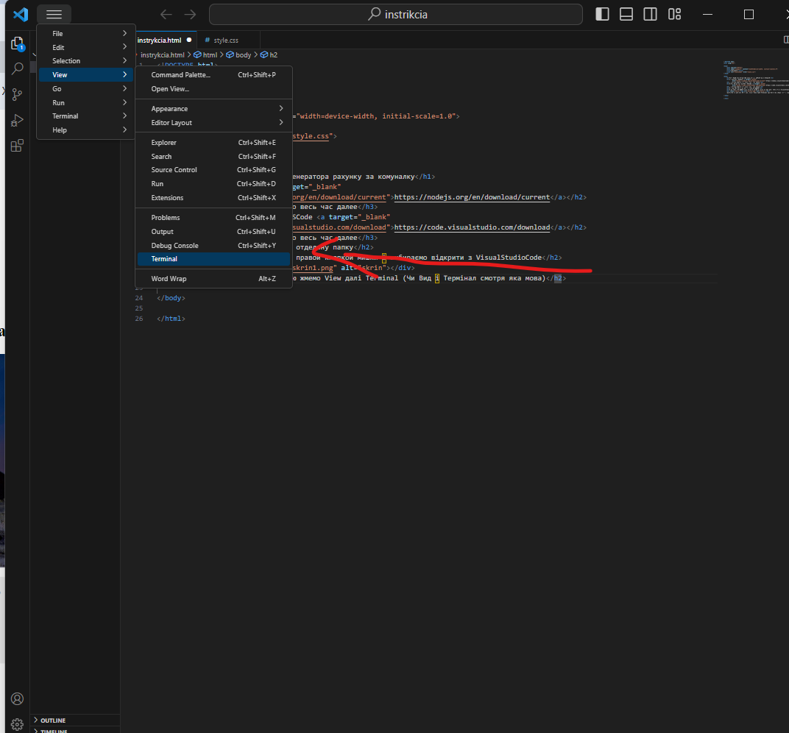
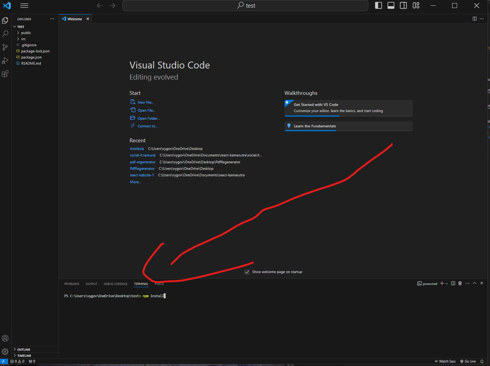
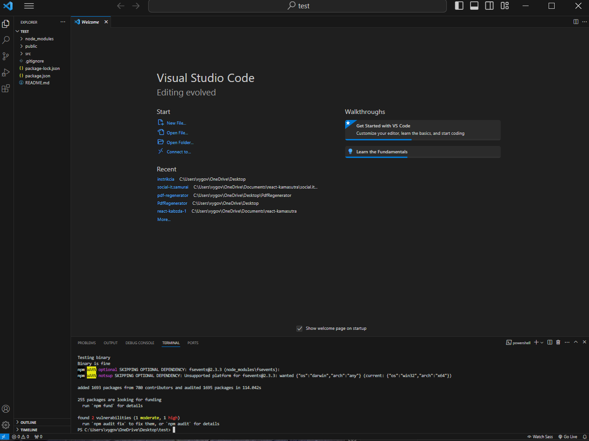
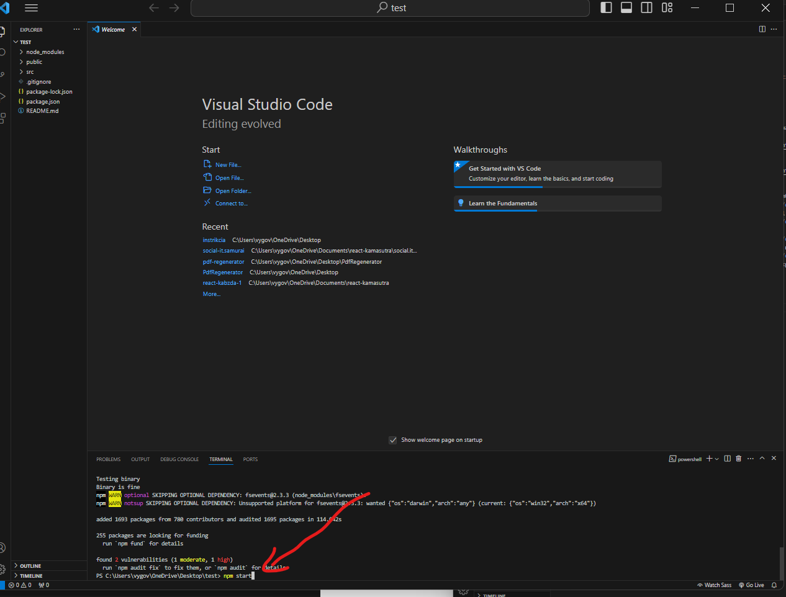
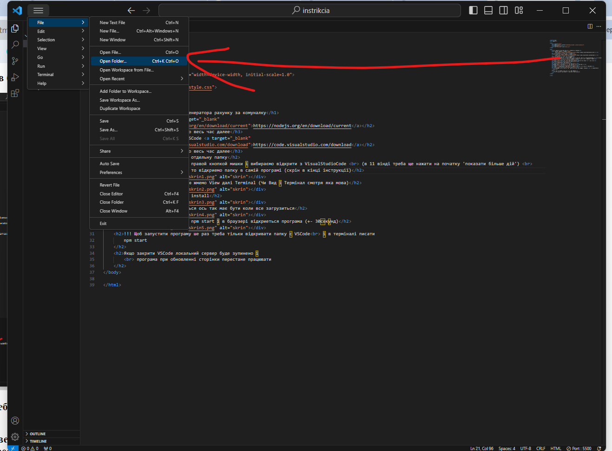

Інструкція по установці генератора рахунку за комуналку
При установці просто жмемо весь час далее
При установці просто жмемо весь час далее
3.Розархівовуэмо проект в отдельну папку
4.на відкриту папку жмемо правой кнопкой мишки і вибираємо відкрити з VisualStudioCode
(в 11 вінді треба ще нажати на початку 'показати більше дій')
Якщо вдруг вскод не зьявиться то відкриемо папку в самій програмі (скрін в кінці інструкції)

5.В програмі зверху в меню жмемо View далі Terminal (Чи Вид і Термінал смотря яка мова)

6. В терміналі пишемо npm install

Чекаємо поки все загрузиться ось так має бути коли все загрузиться

7.Далі в терміналі пишемо npm start і в браузері відкриеться програма (+- 30секунд)

!!! Щоб запустити програму ше раз треба тільки відкривати папку с VSCode
і в терміналі писати
npm start
Якщо закрити VSCode локальний сервер буде зупинено і
програма при обновленні сторінки перестане працювати
додаток до пункту 4(якщо вдруг не вийшло тим способом): відкриваемо VSCode в меню жмемо File далі Open Folder і вибираємо нашу папку
І йдемо далі по інструкції
